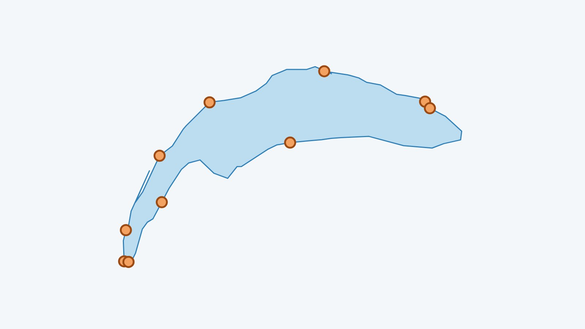

En bref
Mon Lac recense 11 saunas au bord du Léman, de Genève à la Riviera et jusqu’à la rive française. La plupart sont saisonniers, ouverts à la saison froide ; chaque fiche renvoie au site du sauna pour les horaires et la réservation.
Quels saunas trouve-t-on au bord du Léman ?
Des installations très différentes : bains historiques, yourtes et tonneaux chauffés au bois posés sur une plage pour l’hiver, et un bateau-sauna dans la rade de Genève. Les voici, avec la plage la plus proche.
- Sauna Boats Genève, Genève, près de Plage des Eaux-Vives : Le premier sauna flottant du Léman : jusqu’à six personnes, sans permis dans la rade, départ Quai Gustave-Ador 33.
- Bains des Rives, Lausanne (de octobre à mars), près de Lausanne – Bellerive : À Bellerive, yourtes-saunas chauffées au bois et terrasse au bord du lac, plongeon dans le Léman entre deux séances, d’octobre à mars.
- Hammam et sauna des Bains des Pâquis, Genève, près de Bains des Pâquis : Sauna, hammam et bain turc sur la jetée, ouverts l’hiver jusqu’à 21h30 ; on enchaîne avec le lac. Environ 20 francs l’hiver.
- Saun’Ice Port Gitana, Bellevue, près de Bellevue : Sauna au bois privatif au bord de l’eau, esplanade de Port Gitana, jusqu’à 6 personnes, sur réservation.
- Saun’Ice Hermance, Hermance, près de Hermance : Sauna au bois privatif sur la plage d’Hermance (rue du Nord 44), jusqu’à 6 personnes, sur réservation.
- Sauna des Bains des Trois Jetées, Nyon, près de Nyon : Sauna au bord du lac, ouvert au public dès le 13 octobre 2026 sans réservation ; séances privées le soir ou tôt le matin.
- SaunaRolle, Rolle (de octobre à mars), près de Rolle : Sauna associatif tenu par des bénévoles au camping, chemin de la Plage 4 : tipi pour se changer, thé chaud, bain dans le lac. 12 francs la séance.
- Steam on the Water, Petit Port Eiffel, Vevey (de octobre à avril), près de Vevey : Sauna installé au Petit Port Eiffel, vue directe sur le lac, d’octobre à avril.
- Steam on the Water, la Maladaire, La Tour-de-Peilz (de octobre à avril), près de La Tour-de-Peilz : Au camping de la Maladaire : sauna tonneau, yourte chauffée et caravane vitrée, privatisables pour un groupe, d’octobre à avril.
- La Banquise, Genève (de janvier à avril), près de Plage des Eaux-Vives : Saunas au bois de la Ville de Genève, quai Gustave-Ador face au Jet d’eau, en fin d’hiver : séance de 60 minutes à 10 francs, sur réservation.
- Saunas de Coin Nordic, Publier (Amphion) (de septembre à mai), près de Publier – Amphion : Saunas avec vue sur le lac, tous les jours de 10h à 20h40 de fin septembre à mi-mai, sur réservation.
Fiches vérifiées le 11 novembre 2026. Les horaires, les prix et les saisons changent : le lien de chaque sauna mène à son site, à consulter avant de partir.
Et le plongeon dans le lac ?
La Société Suisse de Sauvetage donne une règle simple pour l’eau froide : ne pas rester plus de minutes dans l’eau qu’elle n’a de degrés. L’eau du moment est indiquée plus bas. À lire avant : les 90 premières secondes dans l’eau froide et comment se réchauffer après.
Où les retrouver ?
Dans l’app Mon Lac, l’onglet « Louer » liste les saunas les plus proches de la plage choisie.
Voir aussi : le guide du bain d’hiver dans le Léman et les saunas flottants de Suisse.
L’eau du Léman en ce moment
La température de chaque plage est dans l’app Mon Lac, mise à jour toutes les trois heures.